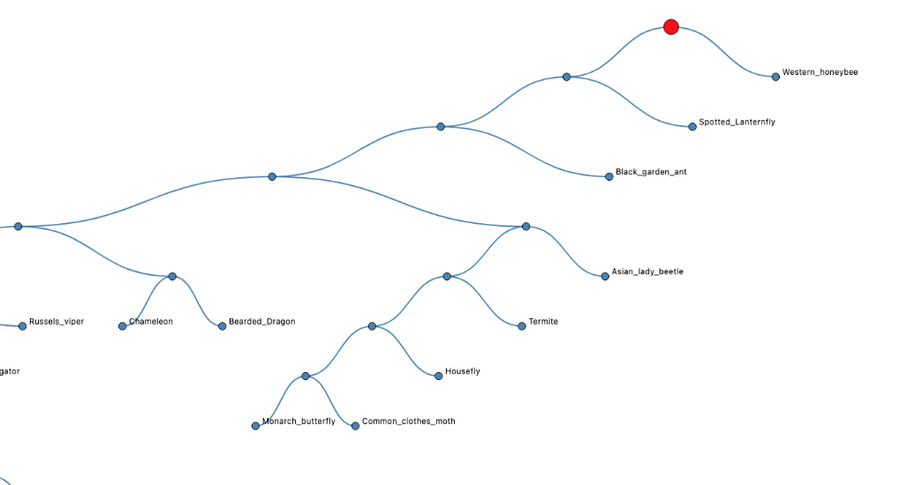
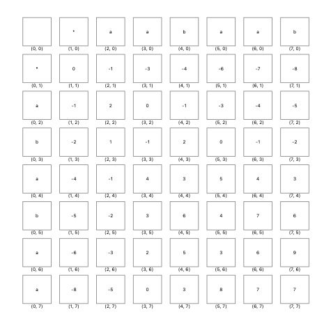

Assignment 86 - DNA Sequence Alignment and Similarity Clustering

Part of the tree cluster

Needlemen-Wunch Score on a 2 alphabet example
Learning Outcomes
The purpose of this assignment (inspired by a SIGCSE Nifty assignment) is to
compute the similarity of 70 organisms using their DNA sequences and build
a resulting tree or dendrogram that displays their similarities.
- File I/O (read the provided data files)
- String processing (DNA sequence comparison using the Needleman-Wunch
alg. to compute a score
- Algorithm Design:
- Brute Force (single link clustering)
- Minimum Spanning Tree (Kruskal's alg for computing disjoint sets)
- Data Structures: lists, dictionaries, binary tree, strings
Example Output
You will generate a visualization that looks like the figure above.
Steps
- Read the input data files (organisms, DNA sequences, BLOSUM tables)
- Implement the Needleman-Wunsch algorithm for similarity computation
- Implement a single-linkage clustering algorithm (exhaustive search) to group species with similar comparison scores
- Implement Kruskal's MST algorith for more efficient clustering.
- Create a Binary Tree using BRIDGES to display the clustering, with unique species as the leaf nodes and clusters represented by internal nodes.
Help
for Java
BinaryTree Class
for C++
BinaryTree Class
For Python
BinaryTree Class